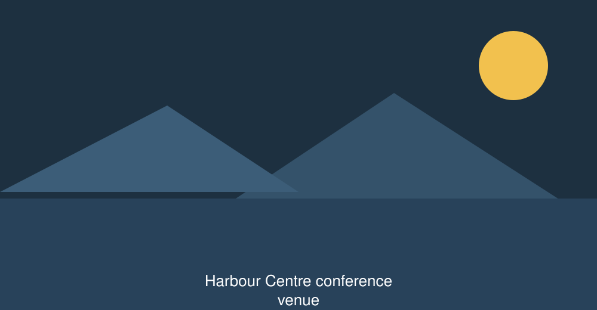
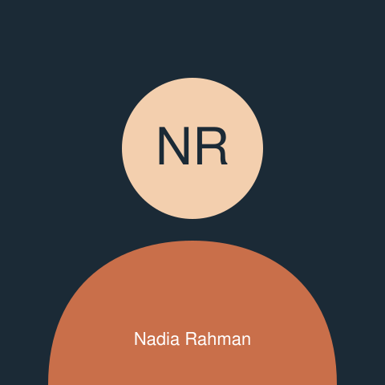

Two days about building web pages that are still standing in ten years.
and
, at the Harbour
Centre in Gothenburg, Sweden.
About the conference
Northern Web is a conference for the people who maintain things. Not
the launch, not the redesign — year six, when the original team has
left, the framework is two majors behind and the content editors have
found every gap in your markup. Everything on the programme is about
that stage of a project.
We are deliberately small. Three hundred and twenty seats, one track of
talks, one track of workshops and one studio for hands-on clinics, so
that you can actually meet the person whose talk you liked. Roughly
half of the attendees come from the Nordics and half from the rest of
Europe.
Every talk is recorded and published within three weeks, with captions
and a transcript. Workshops are never recorded, because people ask
better questions when nobody is filming.

The Harbour Centre on Lindholmen, eight minutes by ferry from the
city centre.
Key facts
Format
One talk track, one workshop track, one clinic studio, over two days.
Languages
All sessions are in English. Live captions in English and Swedish.
Attendance
320 seats. 2025 sold out eleven days before the doors opened.
Recordings
Talks recorded and published free of charge. Workshops never recorded.
Code of conduct
Enforced by three named organisers who are on site both days and
reachable by phone throughout.
Programme
Two days, three rooms. Sessions marked across the whole width of the
table happen in one place and everybody attends.
Day one —
Day one programme, by time and room. One session spans all three
rooms; the document structure workshop spans two time slots.
Time
Main Hall
Workshop Room B
Studio
Registration, coffee and pastries in the foyer
Opening keynote: The web we can maintain
— Nadia Rahman.
.
Read the abstract
Every team knows how to start a project. Almost none of us
are taught how to hand one over. Nadia looks at four
long-lived public sector sites, two that aged well and two
that did not, and pulls out the decisions that made the
difference — most of which were made in the first fortnight.
Ten years of one design system — Aisha Bello.
Read the abstract
A design system that has survived three rebrands, two
framework migrations and one merger. What was kept, what was
thrown away, and why the HTML layer outlived everything
above it.
Workshop: document structure for large sites
— Tomas Lindqvist.
, across both slots.
Laptop required, 24 places.
Read the abstract
You will take a 40-page site with a broken heading outline
and fix it, in pairs, without touching the stylesheet. Bring
a laptop with a browser and a text editor. No build tools.
Forms that survive contact with users — Daniel Kim.
Testing with the assistive technology people actually use
— Aisha Bello and a guest.
Lightning talks: eight speakers, six minutes each
Lunch in the quayside hall
The cost of a component library nobody reads — Daniel Kim
Workshop: writing markup guidance your team will follow
Clinic: bring your own page, we read it with you
Migrating 12 000 pages without breaking search — Tomas Lindqvist
Workshop: captions, transcripts and audio description
Open office hours with the speakers
Evening event at Brewhouse, Åvägen 24 (separate ticket)
Doors open at 08:00. Breaks are 30 minutes and are not listed
separately. Talks in the Main Hall are recorded; nothing in
Workshop Room B or the Studio is recorded.
Day two —
Day two programme, by time and room
Time
Main Hall
Workshop Room B
Studio
Coffee, and a fifteen-minute recap of day one
Ten forms, one afternoon, no JavaScript — Daniel Kim.
Read the abstract
Ten real forms rebuilt with nothing but HTML validation
attributes, then tested with four screen readers and one
very patient colleague who has never used a computer with a
mouse.
Workshop: auditing a site you did not build
— Nadia Rahman.
, across both slots.
20 places.
Clinic: heading outlines, one page at a time
What a spreadsheet taught us about tables — Aisha Bello
Community showcase: five open source projects
Lunch in the quayside hall
Deleting code as a design skill — Tomas Lindqvist
Workshop: writing a component's documentation first
Clinic: forms and validation
Closing panel: teaching the platform — all four
speakers, questions from the floor.
.
The building closes at 18:30. Left luggage is available at the
registration desk all day.
Speakers
Nadia Rahman

Nadia Rahman
Head of Digital Standards, Norwegian Digitalisation Agency. Travels from Oslo.
Nadia has spent eleven years inside government digital teams, most of
that time on services that cannot be turned off: tax returns, benefit
claims, prescription renewals. She writes the standard that every
Norwegian public sector site is audited against.
Principal Engineer, Kollektiv AB. Travels from Malmö.
Tomas migrated the Swedish rail operator's site from 12 000 hand-built
pages to a structured content system without losing a single search
ranking, a project he describes as "four years of reading other
people's HTML".
Design Systems Lead, Meridian Bank. Travels from Lagos.
Aisha keeps a design system that four hundred developers use and
nobody complains about, which she puts down to writing the
documentation before the code and refusing to ship a component
without a keyboard test.
Daniel rebuilds forms for a living: insurance applications, visa
appointments, hospital intake. He has a collection of the worst ones
he has been sent, which he shows at the end of his talk with the
names removed.
Ticket types, what each one includes, and how many were left on
1 September 2026
Ticket
Price
Workshops
Recordings
Lunch both days
Remaining
Community
1 200 SEK
No
Yes
Yes
18
Standard
3 900 SEK
No
Yes
Yes
96
Standard plus workshops
5 400 SEK
Two, one per day
Yes
Yes
31
Evening event place
350 SEK
Not applicable
Not applicable
Not applicable
74
All prices include Swedish
VAT at 25%. Community
tickets are for students, people between jobs, and anyone whose
employer is not paying — we do not ask for proof.
Workshop places are limited to the room capacity listed in the
programme. Once a workshop is full, ticket holders can swap to another
one at the registration desk.
Register
Registration closes on , or when the last ticket goes. You will get a confirmation
email within one working day, and an invoice if you asked for one.
Questions
Can I change my workshop after registering?
Yes, until the workshop is full. Email us, or ask at the registration
desk on the morning of the day.
Is there a student discount?
The community ticket is the student price. It includes both days,
lunch and the recordings. We do not ask for a student card.
Can I transfer my ticket to a colleague?
Up to , free of charge.
After that, bring your colleague to the desk with your confirmation
email and we will reprint the badge.
Will the talks be captioned?
Live captions in English and Swedish are on screen in the Main Hall
for both days, and every published recording has captions and a
transcript.
Is the venue step-free?
Yes, throughout, including the stage. There is a step-free route from
the ferry terminal, an accessible toilet on every floor and a quiet
room on the second floor that is never booked for sessions.
What if I need to cancel?
Full refund until ,
half until , and after
that we will happily transfer the ticket to somebody else instead.
Practical information
The venue
Harbour Centre
Lindholmsallén 12
417 55 Gothenburg
Sweden
Getting there
From Landvetter Airport
Airport coach to Nils Ericson Terminal, 30 minutes, then tram 5 or the
Älvsnabben ferry to Lindholmen, 10 minutes.
From Gothenburg Central Station
Tram 5 towards Eketrägatan, six stops, or a 25-minute walk across
Hisingsbron.
By bicycle
Covered racks for 60 bicycles at the north entrance, free of charge.
By car
Lindholmen car park, 200 m, 40 SEK per hour. There is no parking at
the venue itself.